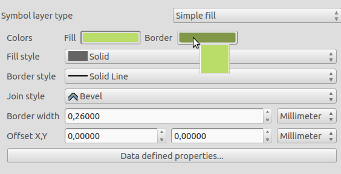
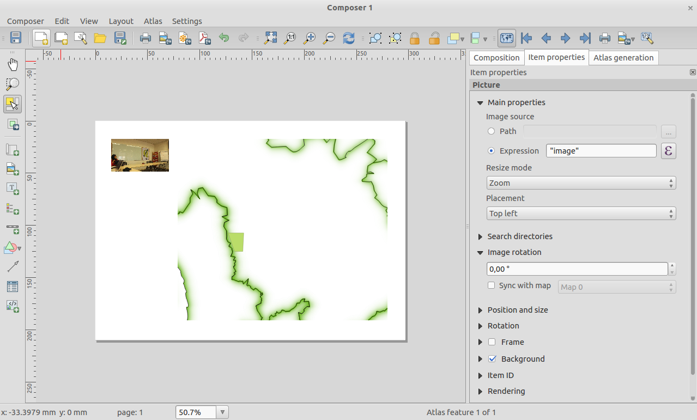
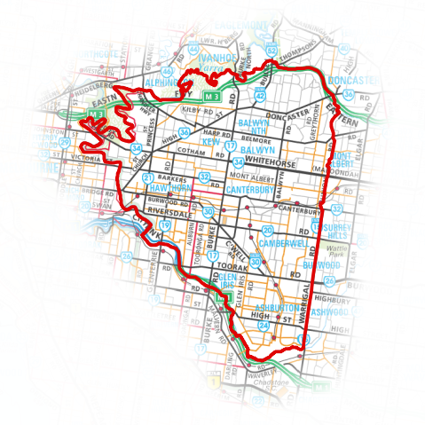
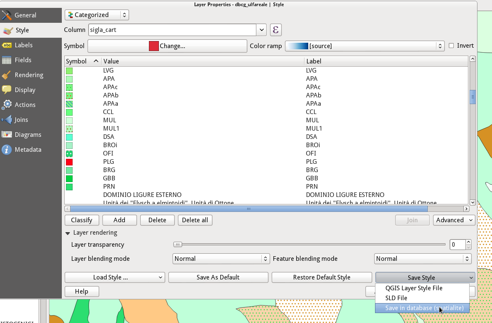

QGIS 2.4の変更履歴¶
QGIS 2.4.0の次のリリースのログを変更します。このリリースは、磨きとパフォーマンスに非常に重点を置いています。ユーザーインターフェースの一貫性とプロフェッショナルな使い方（使い勝手の良さ）を高めるために、多くの新機能、改良、強化が加えられました。コンポーザ（印刷準備マップを作成するために使用）は、大きな地図作成出力を作成するためのより実行可能なプラットフォームにするために多くの作業を行ってきました。
新しい機能がソフトウェアに追加されるたびに、新しいバグが発生する可能性があります。このリリースで問題が発生した場合は、QGISバグトラッカー<http://hub.qgis.org> `__にチケットを提出してください。
私たちは、開発者、ドキュメント作成者、テスター、そして時間と労力をボランティアしている（あるいは人々に資金を提供する）多くの人々に感謝したいと思います。
From the QGIS community we hope you enjoy this release! If you wish to donate time, money or otherwise get involved in making QGIS more awesome, please wander along to qgis.org and lend a hand!
最後に、このプロジェクトに提供した貴重な財政支援について、公式スポンサーに感謝したい。
- ゴールドスポンサー： アジア航測、日本
- シルバースポンサー: G.A.I.A. mbH, Germany
- SILVER Sponsor: State of Vorarlberg, Austria
- BRONZE Sponsor: www.molitec.it, Italy
- BRONZE Sponsor: www.argusoft.de, Germany
- ブロンズスポンサー: www.openrunner.com, France
- ブロンズスポンサー： www.eschenlaub.de、ドイツ<http://www.eschenlaub.de> __
A current list of donors who have made financial contributions large and small to the project can be seen on our donors list.
If you would like to make a donation or sponsor our project, please visit our sponsorship page for details. QGIS is Free software and you are under no obligation to do so. Sponsoring QGIS helps us to fund our six monthly developer meetings, maintain project infrastructure and fund bug fixing efforts.
一般情報¶
機能: NetCDF EXTRA_DIMにおけるバンド名の生成¶
NetCDFは余分な寸法情報を提供した。この情報は、各バンドのメタデータを提供します。これらのメタデータは、各バンドの名前を説明するために使用できます。たとえば、NetCDFファイルの帯域は、指定された深さの温度を表します。ユーザにとっては、バンド番号だけではなく、奥行き情報を持つバンドを選択する方が簡単です。

機能：ラスターデータにスケールとオフセットを適用する¶
いくつかのラスターデータソースでは、データは、メタデータ内にスケールとオフセットを持つインタージェクタとして格納されます。スケールとオフセットを使用して適切なデータを得ることができます。QGISは、その凡例、ヒストグラム、および識別のために、ラスターデータをプロバイダーにユーザーに適切な情報を適用します。

Feature: Quick field field calc bar in attribute table¶
ベクター属性テーブルの計算フィールドを扱う人には、新機能があります。新しい高速計算バーを使用すると、属性テーブルの列の値をすばやく簡単に更新できます。

機能:コンポーザと地図キャンバスにおけるカラープレビューモード¶
2.4に追加された、本当に革新的な機能は、グレースケールと色盲のプレビューのサポートです。これにより、色覚障害者の地図作成や地図のレイアウト、またはグレースケールで印刷された場合の地図の表示方法を視覚化することができます。この新機能の詳細は here <http://nyalldawson.net/2014/05/colour-blindness-and-grayscale-previews-in-qgis-2-4/> __で読むことができます。

機能：QLR QGISレイヤーファイル¶
QGISレイヤー定義ファイルまたは単にQLRのサポートが追加されました（http://nathanw.net/2014/03/12/qgis-qlr/を参照）。QLRファイルは、データを指し示すファイルであり、すべてのスタイリングおよびその他の情報を含む。このファイルを追加するだけで、他のすべての魔法を実行できます。QLRを使用すると、同じレイヤーを複数のマップドキュメントに簡単に追加できます。また、設定されているすべてのプロパティを継承し、QGISでサポートされているレイヤーで動作し、特別なプラグインレイヤーが必要です。
機能:新しい式の関数¶
式ビルダーに新しい機能を追加しました.
- バウンディングボックス(境界)
- バウンディングボックスの幅と高さ（bounds _width / bounds _height）
- 最小/最大x / y座標（xmin / xmax / ymin / ymax）
- 最大/最小文字数にラップされた文字列を返す新しいwordwrap関数

機能：色をコピー、ペースト、ドラッグアンドドロップ¶
QGISの任意のカラー入力ウィジェット間で色をコピー、ペースト、ドラッグアンドドロップできます。この新しい機能がどのように機能するかについての詳細は、この article <http://nyalldawson.net/2014/05/colour-shortcuts-in-qgis-2-4/> __を参照してください。16進数のカラーコードとrgbストリングをカラーボタンに貼り付けて、QGISの外部からカラーをインポートすることもできます。

機能：マルチスレッドレンダリング¶
これは、単にスクリーンショットで正義できない1つの機能です - QGISはマルチスレッドレンダリングをサポートしています！ つまり、地図を描くとき、QGISはCPU内のすべてのコア間で描画作業を分割し、プロセスの効率と応答性を高めます。 responsive とは、地図の表示が更新されるのを待つ必要がなく、再度パンまたはズームできることを意味します。 また、地図表示が段階的に更新され、図面が早期に配置されているかどうかを確認できます。 マルチスレッドレンダリングシステムのより詳細な概要は この記事 を見てください。 QGISの設定ダイアログには、マルチスレッドレンダリングの動作を管理できるオプションがいくつかあります。

ラベリング¶
機能：複数のラベル機能¶
長い線（等高線や道路など）は、定期的に繰り返しラベルを付けることができます。繰り返し間隔を指定するにはmm単位とmap単位を選択できます。リリース時点では、 「重複を避けるために接続された行をマージする」という設定にはまだ問題があります。
マップコンポーザ¶
機能：コンポーザの写真アイテムの改良¶
コンポーザーの画像アイテムは「地図帳フレンドリー」になりました。表記を使用して、各地図帳ページに表示する画像**を定義できます。また、画像のフレームサイズとサイズに関連して**サイズ変更モード**（ズーム、クリップ、ストレッチなど）を設定できるようになりました。新しい placement ** itemプロパティを使用して、フレームに対するイメージの配置を指定することもできます。

機能:地図帳における事前定義スケールモード¶
アトラスの地図アイテムを使って作業するときに、地図のためにあらかじめ定義されたスケールモードを指定できるようになりました。プロジェクトプロパティ設定（プロジェクト - >プロジェクトプロパティ - >一般 - >プロジェクト尺度を参照して、これらの定義済み尺度を設定する）で定義済みの尺度のリストから最適なフィッティングオプションを使用します。

機能:コンポーザにおける属性テーブルの改善¶
私たちは、コンポーザのレイアウトに表を表示する機能をいくつか改良しました。
- テーブル内の列を並べ替えるためのサポートが追加されました
- 式ベースの列のサポートが追加されました
- 個々のテーブル列の配置を設定し、テーブルの見出しセルの配置を指定できるようになりました
- 表の内容は式でフィルタリングできます

機能：コンポーザの一般的な改善¶
マップコンポジションモードで作業している間、快適に過ごせるように、マップコンポーザーにはいくつかの追加があります。
- メインマップキャンバス内の現在の地図アイテムの範囲を表示するためのボタンが追加されました
- レイヤーを持つコンポーザーからSVG画像をエクスポートする機能
- スケールバーのライン結合とキャップスタイルを設定する
- アイテムフレームのライン結合スタイルの設定のサポート

機能:HTMLフレームの改良¶
コンポーザのHTMLフレームが改良されました。複数のリンクされたフレームを手動で作成するために使用できる新しい フレームの追加 ボタンがあります。また、改ページロジックを改良して、HTMLフレームの改ページ時にテキスト行の途中で改ページすることが少なくなるようにしました。

プラグイン¶
機能:メタサーチカタログクライアントプラグイン¶
MetaSearchは、Web（CSW）標準のOGCカタログサービスをサポートするメタデータカタログサービスと対話するためのQGISプラグインです。このプラグインは、QGIS内のメタデータカタログを検索するための簡単で直感的なアプローチとユーザーフレンドリーなインターフェイスを提供し、QGISコア製品でデフォルトで出荷されます。

シンボロジー¶
機能：シェイプバーストの塗りつぶしスタイル¶
私たちはQGIS 2.4で素晴らしいレンダリングを実現しました。シェイプバーストレンダラーを使用すると、線の端からポリゴンの内部に向かって勾配を持つポリゴンを塗りつぶすことができます。あなたは ** shapeburst ** についての詳細を ここで 読むことができます.

機能：マーカー線の配置を移動するオプション¶
線またはポリゴンのエッジに沿ってマーカー線を使用する場合、マーカー線が線の始まりから設定された距離を開始するように オフセット を指定できるようになりました。マーカラインが「最初の頂点」モードまたは「最後の頂点」モードに設定されている場合、このオフセットよりも、マーカが配置されている頂点から線までの距離を制御します。

機能:新しい反転ポリゴンレンダラ¶
ポリゴン地物に新しいレンダラが追加されました。 ポリゴンの外部に スタイルを適用することができます。これは、領域の強調表示や地図作成用マスクの作成に役立ちます。新しいシェイプバーストスタイルで使用すると、このエントリの画像のような出力を作成できるようになりました。
注： プラグインマスクの新しいバージョンは、現在選択されているマスクレイヤーを簡単に作成し、それらのエリアにラベルを付け、地図帳地図生成で自動マスクを生成するのに役立ちます。

機能：Spatialiteレイヤーによるスタイルの保存と復元¶
以前のバージョンではpostgresレイヤーでスタイルを保存することができましたが、Spatialiteレイヤーでも可能になりました。この機能により、spaceiteコンテナ内にさまざまなスタイルを埋め込むことができ、データとそのプレゼンテーションの共有が簡単になります。この機能のビデオチュートリアルはこちらhttp://pvanb.wordpress.com/2014/05/15/saving-layer-styles-to-your-spatialite-database/
